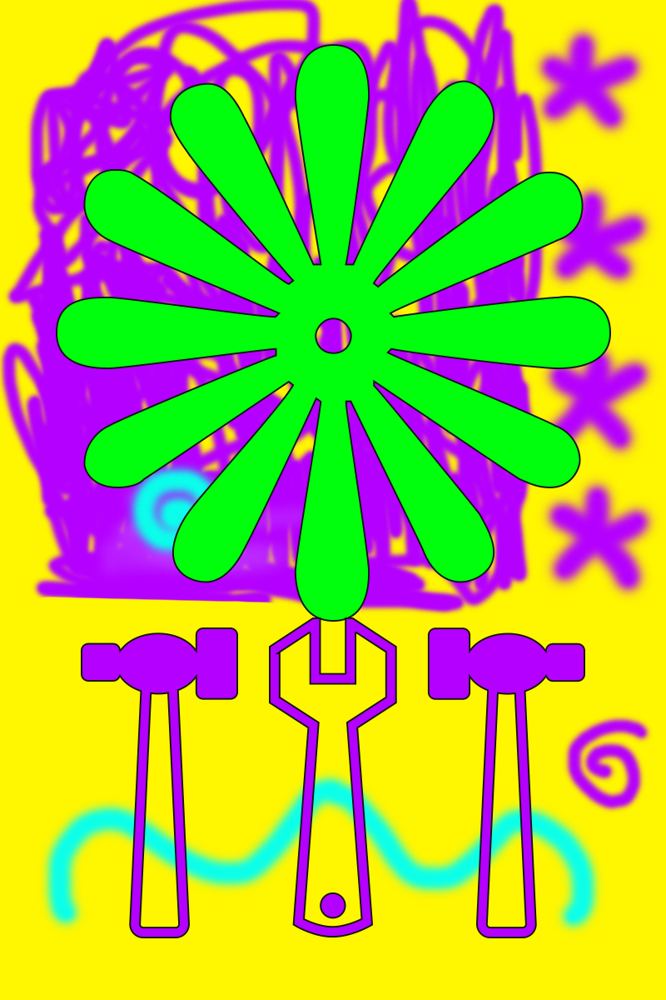
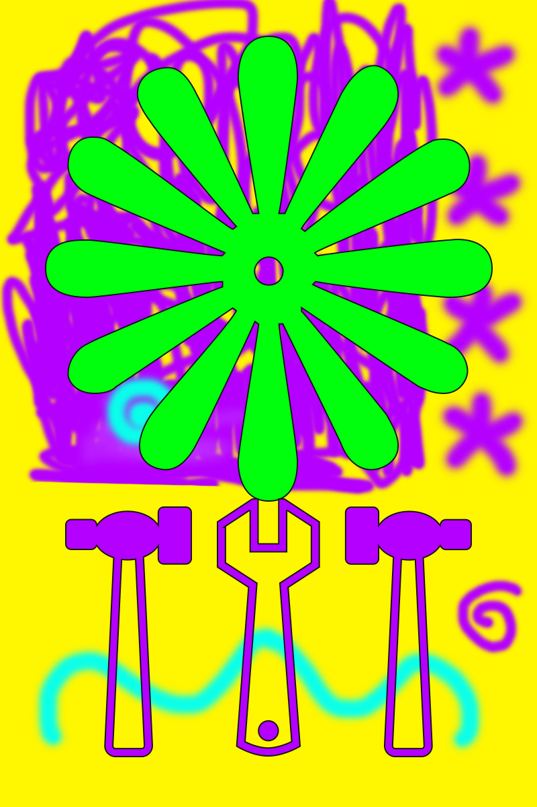
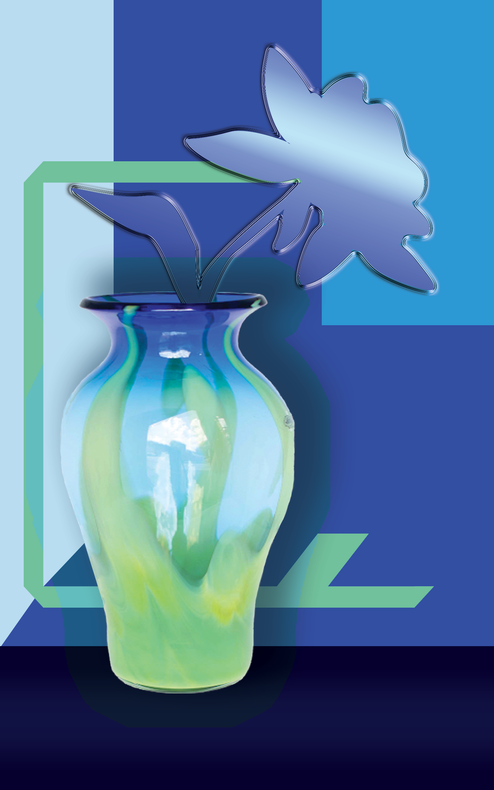
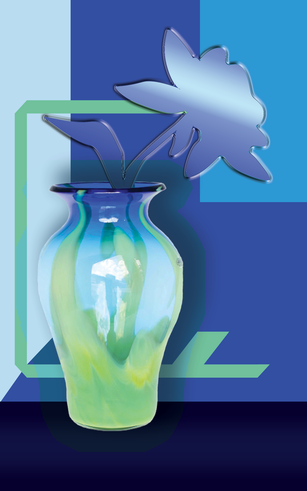

These are the digital works I made using Adobe Illustrator and Photoshop mainly.
None of these posters are actual marketed materials by those events; they are created for either my personal entertainment or technical practice.
In other words, the events may have taken place in real world, but the posters and works I made are not real, contracted works from those institutions.
Although I do have other commissioned works, I didn't include them here since this website is supposed to be a repository of my personal works rather than for professional use.
Though, I plan to include another section of commissioned works in the future.
After transitioning from traditional arts to communication design, I experienced a lot of change in my aesthetics and techniques, as well as my ultimate philosophy towards creative works.
The major difference I experienced was that I created materials for other people; unlike fine arts where the artist is the sole speaker on a megaphone, design required me to be flexible and discrete.
What I mean by discrete here is that the designer shouldn't be the one to decide which stance to take and statement to amplify, it's centered around the client's objective that I'm assisting or the customers who are going to be the recipients.
You can see such transition from the 'arts' page at the top.
Click on the images to see the details.

 

 
